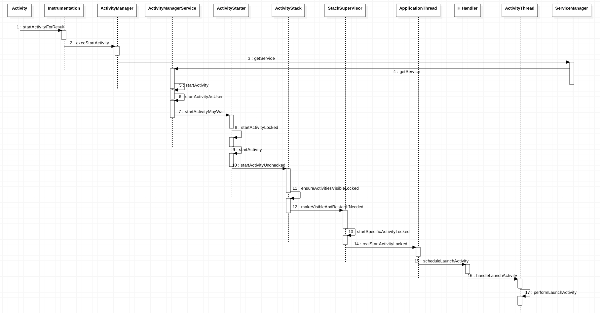

Android开发者都知道启动Activity是使用startActivity()，那么它是怎样一个过程呢？
启动流程
startActivity
两种方式，一种Activity自身方法,一种ContextImpl的方法
ContextImpl.startActivity
如果从Activity外部启动，并且没有设置FLAG_ACTIVITY_NEW_TASK，那么会发生crash。
最终调用Instrumentation.execStartActivity
Activity.startActivity
从代码中能看出，最终还是调用的startActivityForResult
startActivityForResult
- 首先包装
options以便支持scene动画 Instrumentation执行execStartActiviy，并返回一个结果- 将结果传给
ActivityThread，最后执行动画
Instrumentation.execStartActivity
- 首先获取
ApplicationThread其继承自Binder - 如果加入了
Activity监控集，会去比对当前的Intent是否已经存在，如果该Activiy正在已经启动，那么本次直接返回 - 然后交给
ActivityManagerNative启动 - 最后检查返回结果
ActivityManagerNative.startActivity
获取数据，由ActivityManagerProxy发出START_ACTIVITY_TRANSACTION命令。经过IPC，进入到ActivityManagerNative
ActivityManagerNative.onTransact
转换数据，调用ActivityManagerService的startActivity
ActivityManagerService
- 计算用户id，如果是多用户，那么进程id/每个用户范围(100000)，否则直接认为系统是用户
ActivityStarter.startActivityMayWait
- 解析目标
Actiivty - 获取
ActivityStackSupervisor.ActivityContainer，如果父activity没有处在RESUME，那么不能启动子activity - 设置进程id和用户id
- 设置
ActivityStack，如果没有父activity，设置ActivityStackSupervisor - 如果带有隐私标记，那么处理隐私情况
- 调用
startActivityLocked并返回结果,如果启动成功，那么等待。直到满足条件
Activity.startActivityLocked
- 检查
launchFlags - 创建
ActivityRecord
ActivityStarter.startActivityUnchecked
- 计算
launchflags - 获取可复用的
activity - 做了很多复杂的事情，这里不赘述
ActivityStack.ensureActivitiesVisibleLocked
- 如果
ProcessRecord为空，或者ApplicationThread为空，那么尝试重启Acitvity
ActivityStack.makeVisibleAndRestartIfNeeded
- 如果不是正在启动，则启动特定的
Activity
ActivityStackSupervisor.startSpecificActivityLocked
ActivityStackSupervisor.realStartActivityLocked
- 调用
ProcessRecord中的ApplicationThread来启动Actiivty
ApplicationThreadProxy.scheduleLaunchActivity
- 通过IPC获取调用scheduleLaunchActivity
ApplicationThreadNative
- 想H Handler主线程发送启动命令
ActivityThread.performLaunchActivity
- 创建
Activity - 之后通过
Instrumentation开始执行生命周期的方法 - 至此Acitivity的启动起来了。整个过程相当复杂。为了方便理解，中间省略了很多细节
对于onNewIntent的处理
onNewIntent是Activity的一个回调方法，那么在什么情况下会调用呢？在ActivityStack中的navigateUpToLocked中的源码是这样的
- 可以看出条件是
- 当需要启动的
Activity已存在，并且launchMode是SINGLE_TOP(栈顶是相同的Activity)或者SINGLE_INSTANCE或者SINGLE_TASK
- 当需要启动的
Activity启动时序图
